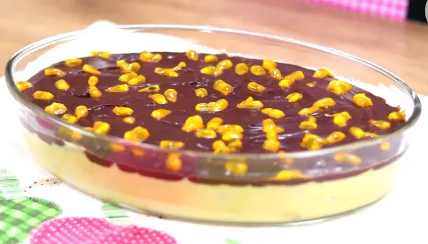

SOBREMESAS
"Gastronomia é comer olhando pro céu. A gastronomia não apenas cozinhar e elaborar pratos é amar e contemplar o mundo e os que nele vivem"
SUGESTÃO DE SOBREMESAS:
.jpg)
- Torta de limão:
A torta de limão é uma sobremesa muito amada por todo mundo! Por ser bem equilibrada, a torta de limão é um doce perfeito para quem não gosta de sobremesas extremamente doces. Além disso, é prática, rápida e simples de fazer.
 - Mousse de pêssego:
- Mousse de pêssego:
O pêssego pode até não ser muito utilizado no preparo de mousses, mas, se você gosta do sabor dessa fruta, pode apostar nessa receita. Você só precisa misturar todos os ingredientes no liquidificador e depois deixar o creme na geladeira até que o doce fique geladinho. Superfácil, não é mesmo?
 - Mousse de milho verde com goiabada
- Mousse de milho verde com goiabada
E que tal fazer uma mousse diferente, de milho verde com goiabada? Aqui, o milho em conserva é usado na base, que é feita rapidamente no liquidificador. Já a goiabada entra no preparo de uma calda que vai deixar sua sobremesa ainda mais gostosa.

- Bombom aberto de maracujá
Aqui, a dica é servir um doce que combina a mousse de maracujá com o chocolate de um modo diferente. A sobremesa em duas camadas é uma boa pedida para quem gosta de mais de um sabor na mesma colherada e para os indecisos.
 - Creme de natacom ganache de chocolate
- Creme de natacom ganache de chocolate
Se você quer uma receita que tenha um sabor diferente, mas que não deixe de ter um preparo simples e rápido, essa pode ser uma ótima opção. A nata e o chocolate formam uma ótima combinação, então que tal experimentar?